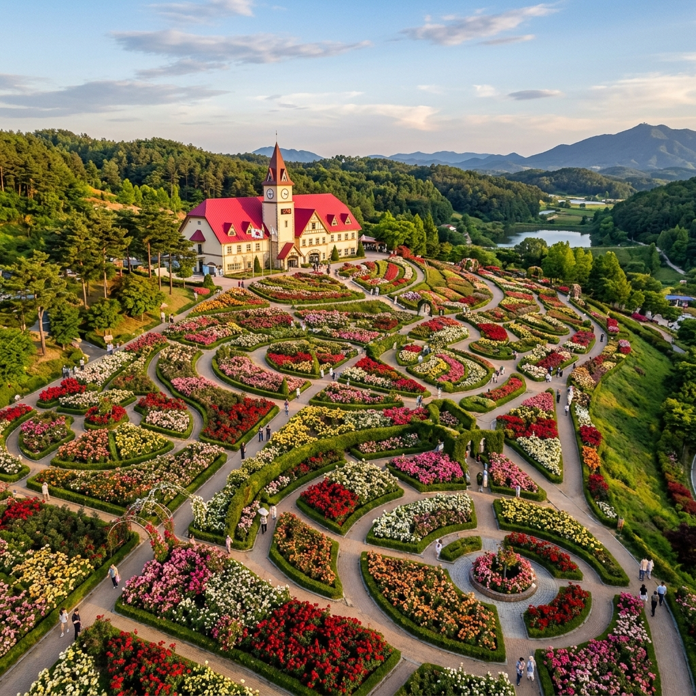
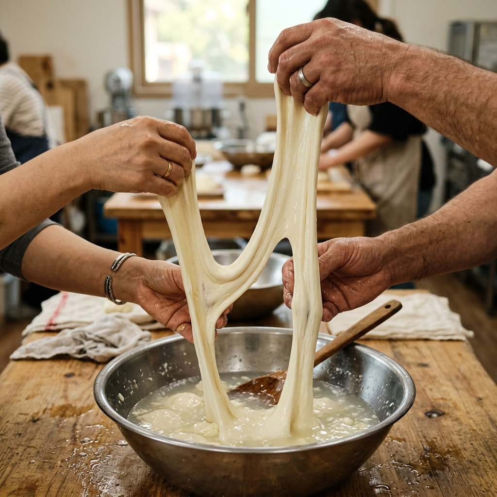
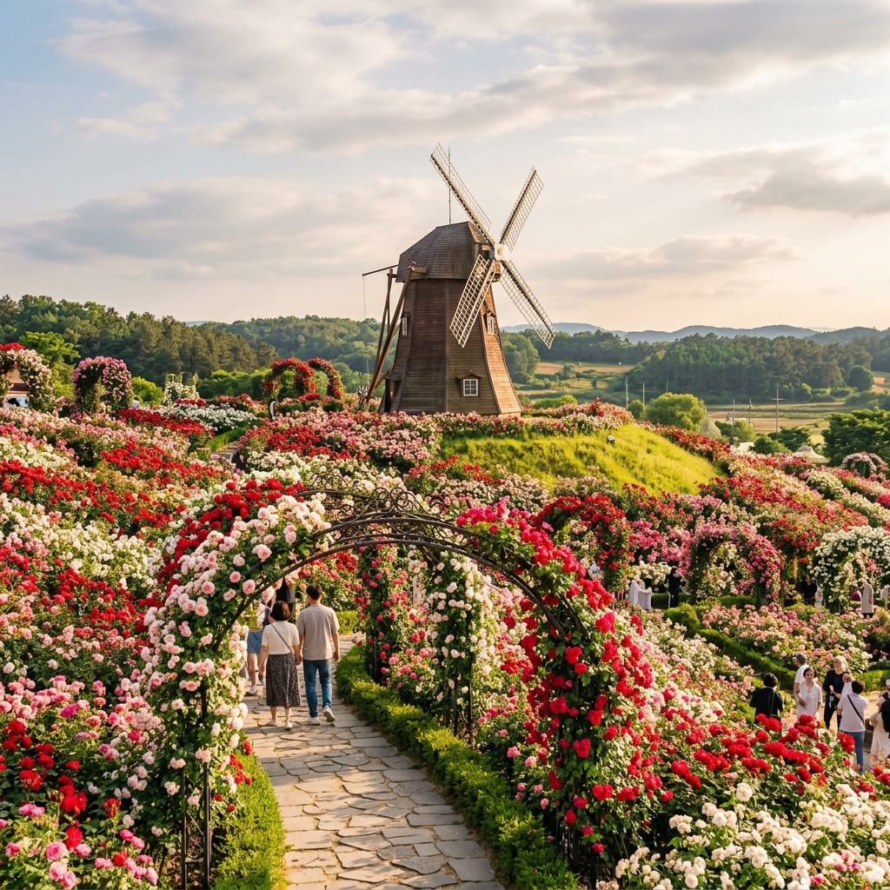

임실 치즈테마파크 장미정원 2026: 150종 22,000주 만개 현황과 체험 코스
전북 임실의 푸른 언덕 위에 자리한 임실치즈테마파크가 5월의 절정을 맞아 붉게 물들고 있습니다. 6만 5,705㎡에 달하는 광활한 부지에 식재된 150여 종, 22,000여 주의 장미가 사계절 장미원과 유럽형 장미원을 가득 채우는데요. 이번 가이드에서는 5월 초·중순의 개화 진행 상황, 2026년 제1회 임실N장미축제(5월 28~31일)의 사전 답사 포인트, 그리고 임실치즈만의 시그니처 체험을 한 번에 소개합니다.
1. 임실치즈테마파크가 봄철 핫플로 떠오른 이유
임실치즈테마파크는 본래 국내 유일의 치즈 테마형 관광지로 출발했지만, 최근 몇 년 사이 장미 명소로서의 입지를 강력하게 굳혀가고 있습니다. 단순히 치즈 체험만을 위해 들렀다가 광활한 장미원의 향기에 사로잡혀 발걸음을 떼지 못하는 방문객이 줄을 잇고 있는데요. 유럽형 풍차와 알프스풍 건축물을 배경으로 형형색색 장미가 만개하는 풍경은 국내에서는 좀처럼 보기 어려운 경관입니다.
특히 2026년부터는 임실N장미축제가 새롭게 신설되면서 봄의 행사 라인업이 한층 두터워졌습니다. 가을 임실N치즈축제, 여름 아쿠아페스티벌, 겨울 산타축제와 더불어 사계절 축제 시스템이 완성되는 셈입니다. 5월 한 달간은 평일에도 가족·연인·사진작가가 꾸준히 몰리며, 주말에는 정문 입장 대기 줄이 길어질 정도로 열기가 뜨겁습니다.

알프스풍 건물과 어우러진 임실치즈테마파크 장미원의 5월 풍경 / AI 제작 이미지
2. 5월 개화 캘린더: 지금 가면 어떤 풍경을 볼까
임실치즈테마파크의 장미는 일반적으로 5월 중순부터 본격 개화를 시작해 5월 말 절정을 맞고, 6월 초까지 풍성한 만개 상태가 지속됩니다. 5월 초에는 조생종 장미와 함께 사계절 장미원의 일부 구역이 먼저 색을 입히는데, 이 시기는 장미 봉오리가 막 벌어지기 시작해 사진 촬영 시 맑고 청량한 색감을 얻을 수 있어 오히려 매력이 큽니다.
사계절 장미원은 이름 그대로 봄·여름·가을 내내 꽃을 볼 수 있도록 품종이 안배되어 있어, 어느 시기에 가더라도 일정 수준 이상의 만개도를 보장합니다. 반면 유럽형 장미원은 5월 말부터 6월 초 사이에 가장 뜨겁게 타오르는데요. 여기에는 고전 잉글리시 로즈 계열과 함께 셔블, 핑크 노블레스 같은 개량 품종이 가득 식재되어 있어 향기까지 풍부합니다.
장미 만개도 체크 노하우
방문 전에는 임실치즈테마파크 공식 홈페이지의 SNS 채널과 임실군청의 보도자료를 함께 확인하면 실시간 개화 상황을 가장 정확히 파악할 수 있습니다. 주말 직전 금요일에 올라오는 사진이 통상 가장 최신 상태이며, 비가 내린 직후에는 꽃잎이 다소 처질 수 있으므로 맑은 날을 골라 방문하는 것이 좋습니다. 나비와 벌이 활발한 오전 10~11시는 자연 다큐 같은 장면을 포착하기에도 최적입니다.
3. 2026 제1회 임실N장미축제 핵심 정보 정리
올해 처음 정식 개최되는 임실N장미축제는 2026년 5월 28일(목)부터 31일(일)까지 4일간 진행됩니다. 입장료는 전 기간 무료로, '치즈와 함께하는 장미축제'를 슬로건으로 내걸어 단순한 꽃 구경을 넘어 미식·체험·공연을 결합한 종합 페스티벌로 기획되었습니다. 축제 사전 답사를 위해 5월 초·중순에 방문하는 분이라면, 본 행사 기간을 피해 한적하게 장미원만 즐기는 것도 좋은 전략입니다.
주요 프로그램은 인기 가수의 축하 공연, 장미 테마 체험 부스, 지역 예술인의 거리 공연, 그리고 임실 치즈를 활용한 즉석 푸드존 등으로 구성됩니다. 야간 시간대에는 장미원 곳곳의 조명이 점등되어 낮과는 전혀 다른 무드를 연출하는데요. 다만 4일간 집중적으로 인파가 쏠리는 만큼, 차분히 사진을 남기고 싶다면 축제 직전 평일을 노리는 편이 합리적입니다.
| 구분 | 내용 | 참고 |
|---|
| 축제 기간 | 2026.05.28(목)~05.31(일) | 4일간 |
| 입장료 | 0원 (무료) | 전 기간 동일 |
| 운영시간 | 09:30~17:00 (매표 16:00 마감) | 월요일 휴무 |
| 장미원 면적 | 약 65,705㎡ | 약 1만 9천 평 |
| 장미 규모 | 150여 종 / 22,000여 주 | 사계절·유럽형 2개 정원 |
4. 입장료·운영시간·휴무일: 헛걸음 방지 체크리스트
임실치즈테마파크의 평시 입장료는 성인 4,000원, 65세 이상 어르신 3,000원, 초·중·고 학생 1,000원으로 책정되어 있습니다. 미취학 아동, 임실군민, 국가유공자, 장애인 등은 무료입장이 가능하니 해당 자격이 있다면 신분증을 미리 챙겨두시면 좋습니다. 다만 입장료는 시즌별·축제별로 정책이 변동될 수 있으므로 방문 직전 공식 홈페이지에서 한 번 더 확인하는 습관을 들이는 것이 안전합니다.
운영시간은 오전 9시 30분부터 오후 5시까지이며, 매표는 마감 1시간 전인 오후 4시에 종료됩니다. 정기 휴무일은 매주 월요일이고, 월요일이 공휴일인 경우 그다음 화요일에 휴무합니다. 5월 가정의 달 연휴 기간에는 휴무 일정이 변동될 수 있으니 방문 전 전화(063-643-3400) 확인은 필수입니다. 모르고 월요일에 방문하면 멀리서 차를 돌려야 하는 안타까운 상황이 발생할 수 있습니다.
5. 임실 치즈 체험: 모짜렐라 늘이기와 쌀피자 만들기
장미 감상만으로 임실치즈테마파크를 떠난다면 절반의 즐거움만 누리는 셈입니다. 이곳의 진짜 시그니처는 바로 치즈 체험 프로그램인데요. 청정 원유로 갓 만든 모짜렐라 커드를 직접 늘여보는 모짜렐라 체험은 아이들의 눈을 가장 반짝이게 만드는 인기 코스입니다. 따뜻한 물에 담근 커드가 길게 늘어나는 순간, 가족 사진으로 남기기에도 더할 나위 없이 좋습니다.
또 다른 대표 프로그램은 임실N치즈 쌀피자 만들기입니다. 우리쌀로 반죽한 도우 위에 임실 모짜렐라를 듬뿍 올려 직접 굽는 체험으로, 완성된 피자는 그 자리에서 시식하거나 포장해 갈 수 있습니다. 축제 기간 사전 접수 가격은 7,000원, 현장 접수는 10,000원 선이며, 평시 체험비는 코스에 따라 차등 적용됩니다. 체험은 시간대별로 정원이 정해져 있으므로 주말에는 반드시 사전 예약이 권장됩니다.

임실치즈테마파크의 시그니처 모짜렐라 늘이기 체험 / AI 제작 이미지
6. 인생샷 스폿: 풍차·계단정원·유럽형 장미터널
사진 한 장으로 임실치즈테마파크의 매력을 압축하고 싶다면 유럽형 풍차를 배경 삼는 구도가 가장 효과적입니다. 풍차 하단의 계단 정원에서 장미가 만개하면 마치 프로방스의 어느 농가에 와있는 듯한 풍경이 펼쳐지는데요. 이른 오전 햇살이 풍차 뒷면을 비추는 시간대에 촬영하면 역광 실루엣과 컬러 대비가 가장 아름답게 잡힙니다.
메인 진입로의 장미 아치 터널 또한 놓치면 아쉬운 명당입니다. 이곳은 일렬로 늘어선 아치 구조물에 덩굴장미를 올려 만든 길로, 만개기 사이를 걷는 것만으로도 향기에 압도됩니다. 인물 사진을 찍을 때는 터널 안에서 바깥쪽 빛이 쏟아지는 방향을 등지고 서면, 빛 번짐 효과와 함께 환상적인 분위기가 연출됩니다. 키 큰 삼각대를 활용해 로우 앵글로 잡으면 장미가 머리 위로 쏟아지는 듯한 매력적인 컷을 얻을 수 있습니다.
7. 주차 및 교통: 무료 주차장 활용 전략
자가용 이용 시 가장 큰 장점은 주차장이 매우 넓고 무료로 운영된다는 점입니다. 정문 인근 주차장 외에도 보조 주차장이 마련되어 있어 평일에는 거의 빈자리 걱정 없이 이용할 수 있습니다. 다만 주말과 가정의 달 황금연휴 기간에는 오전 10시 이후 정문 주차장이 일찍 만차에 가까워지므로, 오전 9시 30분 개장 직후에 도착해 좋은 자리를 선점하는 전략이 좋습니다.
대중교통을 이용한다면 임실역(전라선) 도착 후 군내버스로 환승하는 코스를 추천합니다. 다만 군내버스 배차가 다소 길기 때문에 임실역 인근에서 택시를 이용하면 약 10분 거리로 빠르게 이동할 수 있습니다. 전주에서 출발한다면 자가용 기준 약 40분, 광주에서는 약 1시간 30분 정도 소요됩니다. 차량 충전이 필요한 경우 단지 내 전기차 충전소가 마련되어 있어 함께 활용할 수 있습니다.
8. 동선 추천: 반나절·하루 코스 가이드
처음 방문하는 분들을 위해 효율적인 동선을 두 가지로 제안합니다. 반나절 코스는 정문 → 사계절 장미원 → 유럽형 풍차 → 모짜렐라 체험 → 카페 휴식 순으로 약 3시간이 적정합니다. 사진 촬영과 체험을 적절히 조합한 형태로, 늦은 오후 임실 시내로 이동해 저녁 식사까지 마무리하는 일정으로 짜기에 부담이 없습니다.
하루 코스는 오전 일찍 입장해 장미원 → 모짜렐라·피자 체험 → 점심 식사 → 풍차 정원 → 키즈존·동물 만나기 → 기념품 매장 순으로 진행합니다. 점심은 단지 내 식당가에서 임실 치즈를 활용한 정식 메뉴를 즐겨도 좋고, 인근의 토속 한정식 식당으로 이동하는 방법도 있습니다. 하루를 온전히 쓴다면 임실치즈마을까지 연계해 치즈 만들기 공방을 들러보는 것도 매우 만족스러운 선택입니다.

유럽형 풍차와 어우러진 만개한 장미원의 환상적 배합 / AI 제작 이미지
9. 주변 연계 여행지: 옥정호와 사선대까지
임실치즈테마파크 일정만으로 아쉽다면 차량으로 30분 거리에 있는 옥정호를 함께 일정에 넣어보세요. 안개가 자욱하게 피어오르는 새벽 풍경은 사진작가들에게 오랜 사랑을 받아온 명소이며, 5월에는 호수 둘레의 신록이 절정에 달해 드라이브 코스로도 완벽합니다. 출렁다리와 외앗날 전망대에서 내려다보는 호수는 그 자체로 풍경화입니다.
또 다른 추천지는 임실군의 대표 자연 명소인 사선대 관광지입니다. 신선이 내려와 놀았다는 전설을 품은 기암괴석과 청정한 계곡, 그리고 잘 정비된 산책로가 어우러져 가족 단위 방문객에게 인기가 많은 곳입니다. 임실군 내에는 이 외에도 옥정호 붕어섬 출렁다리, 임실치즈마을 등 다양한 연계 코스가 있으므로 여행 일정을 1박 2일로 늘려도 충분히 알차게 채울 수 있습니다.
10. 에디터의 마무리 한마디
임실치즈테마파크의 5월은 치즈의 고소함과 장미의 향기가 절묘하게 어우러지는 특별한 계절입니다. 단순한 꽃 구경을 넘어 미식과 체험, 그리고 가족 모두가 즐길 수 있는 종합 휴식 공간으로 자리 잡았다는 점에서 봄철 가족 나들이 코스로 손색이 없습니다. 5월 28일부터 시작될 첫 임실N장미축제는 더욱 화려한 이벤트로 채워질 예정이니 지금부터 일정을 미리 체크해 두시기를 권합니다.
바쁜 도시의 일상에서 잠시 벗어나 푸른 언덕 위 알록달록한 장미와 갓 만든 모짜렐라의 따뜻함을 느껴보세요. 임실의 맑은 햇살과 부드러운 바람이 여러분의 봄을 가장 향기롭게 마무리해 줄 것입니다.
#임실치즈테마파크
#임실N장미축제
#임실가볼만한곳
#5월꽃구경
#장미명소
#치즈체험
#모짜렐라체험
#아이와가볼만한곳
#전북여행
#가정의달나들이